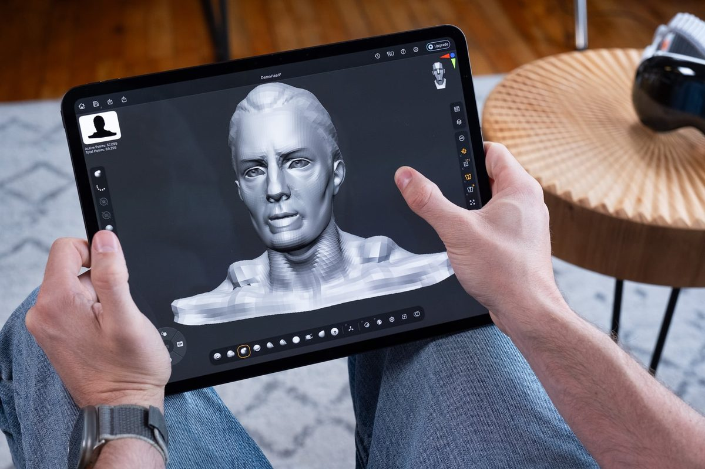

iPad Pro M5は、タブレットというカテゴリーを再定義しました。 M5チップによる驚異的な処理能力と、世界最高峰のTandem OLEDディスプレイの融合。 これは単なる「大きなiPhone」ではなく、真のクリエイティブ・ステーションです。 アーティスト、デザイナー、映像制作者にとって、これ以上の相棒は存在しません。
セクション1：Tandem OLEDが変える、視覚体験の極致
Ultra Retina XDRディスプレイに採用された「Tandem OLED」技術は、 2枚のOLEDパネルを積層させることで、従来の常識を覆す明るさと色精度を実現しました。 最大1,600ニトのピーク輝度と、無限大のコントラスト比。 漆黒から眩い光までを完璧に描き出すその描写力は、 HDR動画の編集や高精細なイラスト制作において、決定的なアドバンテージとなります。
iPad Pro M5 ディスプレイ仕様
ディスプレイ形式
Tandem OLED (Ultra Retina XDR)
ピーク輝度
1,600 nits (HDR)
リフレッシュレート
120Hz ProMotion
コントラスト比
2,000,000:1
セクション2：M5チップと、AIによる創造性の加速
M5チップに搭載された次世代のNeural Acceleratorは、 AI処理能力において劇的な進化を遂げました。 Procreateでのリアルタイム・ブラシ生成、Final Cut Proでの背景分離、 あるいはBlenderでの3Dレンダリング。 これまでデスクトップ級のパワーを必要としていた作業が、 iPadの薄いボディの中で、指先一つで完結します。 153GB/sのメモリ帯域幅は、複数のクリエイティブ・アプリを同時に操る プロのワークフローを強力にバックアップします。

セクション3：Apple Pencil Proとの、完璧なシンクロ
Apple Pencil Proとの組み合わせは、もはや「道具」の域を超え、 「身体の拡張」に近い体験を提供します。 スクイーズ（指で押す）操作によるツール切り替え、バレルロール（軸の回転）によるブラシ形状の変化。 そして、0.12秒という驚異的な低遅延。 紙にペンを走らせるのと変わらない、いや、それ以上の直感的な操作感が、 あなたのアイデアをダイレクトに形にします。
結論：タブレットの、その先へ
iPad Pro M5は、もはや「パソコンの代わり」を探すためのデバイスではありません。 「iPadでしかできないこと」を追求し、創造の可能性を極限まで広げるための道具です。 この薄い一枚の板が、あなたの世界をどう変えるのか。 その答えは、あなたの手の中にあります。
詳細は Apple公式サイト で確認してみてください。